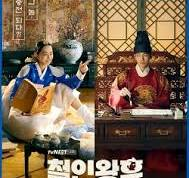

|  | Mr. Queen merupakan drama yang mengisahkan tentang seorang koki bernama Jang Bong Hwan yang terperangkap ke tubuh Ratu Cheorin pada masa Dinasti Joseon. Awalnya, Bong Hwan tidak percaya dengan apa yang terjadi padanya dan ia mencoba melarikan diri dari istana. Namun perlahan Bong Hwan menyadari bahwa dirinya terjebak di dalam tubuh seorang ratu hingga ia akhirnya belajar cara hidup sebagai seorang wanita di istana. Di sisi lain, Raja Cheoljong sedang mencari seorang istri dan ia memilih Ratu Cheorin yang tubuhnya dihuni roh Bong Hwan.(sumber:ccnindonesia.com) |